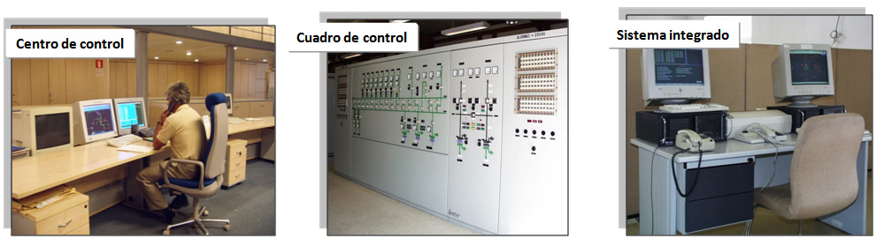
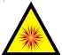

Trabajos con riesgo eléctrico en alta tensión:
- Si las maniobras, mediciones, ensayos y verificaciones NO se realizan localmente.
Por ejemplo, se realizan a distancia desde. . .

El operador NO estará expuestos a riesgos eléctricos de. . .
Descargas por contacto eléctrico en AT.
Exposición al arco eléctrico en AT.
NO será necesaria la presencia del Recurso Preventivo.